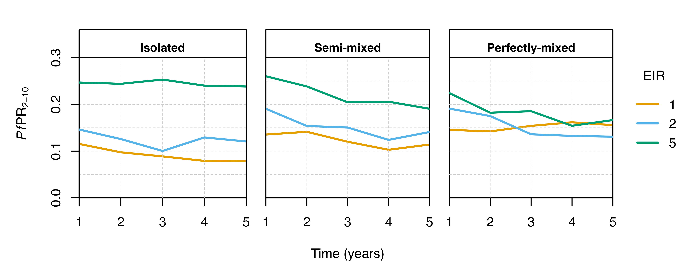

Metapopulation.Rmd
# Load the requisite packages:
library(malariasimulation)
library(malariaEquilibrium)
# Set colour palette:
cols <- c("#E69F00", "#56B4E9", "#009E73", "#F0E442", "#0072B2", "#D55E00", "#CC79A7")The metapopulation model runs the individual-based model for multiple
parameterized units (countries, regions, admins, etc.) simultaneously.
The inputted mixing matrix allows for the transmission of one unit to
affect the transmission of another unit. ‘Mixing’ in the model occurs
through the variables foim_m and EIR.
Here we will set up a case study of three distinct units and compare output with various transmission mixing patterns.
# set variables
year <- 365
human_population <- 1000
sim_length <- 5 * year
EIR_vector <- c(1, 2, 5)
# get parameters
ms_parameterize <- function(x){ # index of EIR
params <- get_parameters(list(human_population = human_population,
model_seasonality = FALSE,
individual_mosquitoes = FALSE))
# setting treatment
params <- set_drugs(params, list(AL_params))
params <- set_clinical_treatment(params, drug = 1, timesteps = 1, coverages = 0.40)
params <- set_equilibrium(params, init_EIR = EIR_vector[x])
return(params)
}
# creating a list of three parameter lists
paramslist <- lapply(seq(1, length(EIR_vector), 1), ms_parameterize)Our parameters for the three distinct units are stored in the object
paramslist. Next we will run the metapopulation model with
these parameters. We will plug in three mixing matrices - A) isolated,
B) semi-mixed, C) perfectly mixed.
# isolated
mix_1 <- diag(length(EIR_vector))
# semi-mixed
mix_2 <- matrix(c(0.8, 0.1, 0.1,
0.1, 0.8, 0.1,
0.1, 0.1, 0.8),
nrow = 3, ncol = 3)
# perfectly-mixed
mix_3 <- matrix(rep(1/3, 9), nrow = 3, ncol = 3)
# run model
set.seed(123)
metapop_loop <- function(mixing, mixnam){ # mixing matrix
output <- run_metapop_simulation(timesteps = sim_length,
parameters = paramslist,
correlations = NULL,
mixing_tt = 1,
export_mixing = list(mixing),
import_mixing = list(mixing),
p_captured = list(matrix(rep(0, 9), nrow = 3, ncol = 3)),
p_captured_tt = 1,
p_success = 0.95)
# convert to dataframe and label EIR and mixing matrix type
output <- do.call('rbind', output)
output$EIR <- c(sort(rep(EIR_vector, sim_length)))
return(output)
}
output1 <- metapop_loop(mix_1)
output1$mix <- 'isolated'
output2 <- metapop_loop(mix_2)
output2$mix <- 'semi-mixed'
output3 <- metapop_loop(mix_3)
output3$mix <- 'perfectly-mixed'
output <- rbind(output1, output2, output3)
# get mean PfPR 2-10 by year
output$prev2to10 = output$p_detect_lm_730_3650 / output$n_age_730_3650
output$year = ceiling(output$timestep / 365)
output$mix = factor(output$mix, levels = c('isolated', 'semi-mixed', 'perfectly-mixed'))
output <- aggregate(prev2to10 ~ mix + EIR + year, data = output, FUN = mean)Now let’s visualize the results of mixing on PfPR2-10:
Panel_spec <- rbind(c(0,0.37,0,1),
c(0.37,0.635,0,1),
c(0.635,0.9,0,1),
c(0.9,1,0,1))
Margin_spec <- rbind(c(0.8,0.8,0.3,0.1),
c(0.8,0.1,0.3,0.1),
c(0.8,0.1,0.3,0.1))
Mix_vec <- unique(output$mix)
EIR_vec <- unique(output$EIR)
Xlab_vec <- c("","Time (years)","")
Ylab_vec <- c(expression(paste(italic(Pf),"PR"[2-10])),"","")
New_vec <- c(F,T,T)
Plot_Mixing <- function(output){
for(i in 1:3){
par(fig=Panel_spec[i,], cex = 0.8, mai = Margin_spec[i,], new = New_vec[i])
with(subset(output,output$mix == Mix_vec[i] & output$EIR == EIR_vec[1]),{
plot(x = year, y = prev2to10, type = "l", col = cols[1], lwd = 2,
ylim = c(0,0.36), yaxt = "n",
xaxs = "i", yaxs = "i",
ylab = Ylab_vec[i], xlab = Xlab_vec[i])
abline(h = seq(0.05,0.25, by = 0.05), lty = 2, col = "grey80", lwd = 0.5)
sapply(2:4, function(x){segments(x0 = x, x1 = x, y0 = 0, y1 = 0.3,
lty = 2, col = "grey80",lwd = 0.5)})
# grid(lty = 2, col = "grey80", lwd = 0.5)
if(i ==1){axis(side = 2, at = seq(0,0.4,by=0.1))}
title(gsub("(^[[:alpha:]])", "\\U\\1", Mix_vec[i], perl=TRUE), line = -1.4, cex.main = 0.9)
abline(h = 0.3)
})
for(j in 2:3){
with(subset(output,output$mix == Mix_vec[i] & output$EIR == EIR_vec[j]),
points(x = year, y = prev2to10, type = "l", col = cols[j], lwd = 2))
}
}
par(fig=c(0.9,1,0,1), cex = 0.8, new = T, xpd = T, mai = c(0,0,0,0))
legend("left", legend = EIR_vec, col = cols[1:3], lwd = 2,
bty = "n", lty = 1, title = "EIR", y.intersp = 2)
}
Plot_Mixing(output)